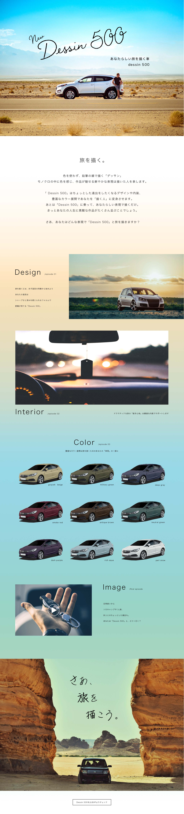

Dessin 500 自動車LP制作
・自動車「Dessin 500」のLP制作
・20、30代の1人旅や少人数での旅行をよく楽しむ男性がターゲット
・「旅を描く」がコンセプト、乗る人の日常や休日を「旅」にして人生に「描く」自動車
・デザインはシャープさのあるフォルムの中に、軽い印象になりすぎないよう
細部に深みを感じられるポイントを取り入れたことがこだわり
・内装は様々な状況や趣味に対応出来る、多機能仕様
・カラーは全9色、ファッションのように愛着を感じられる独自のカラー展開で、
より自動車に興味と親しみを持ってもらう事が狙い
- 意識した点
-
「旅を描く」というコンセプトから、天気の良い日に旅に出るイメージで制作しました。
メインヴィジュアルは青空と道のコントラストが目を引く写真にし、
思わずどこかへ出かけたくなる、印象的な画像を選びました。
背景に、朝日のオレンジから日中の鮮やかな青空色に変化するグラデーションを取り入れ、
ゆったり時間が流れる雰囲気が出るよう調節しました。
ロゴマークは「描く」のイメージから画家のサインのような筆記体を使用しました。 - 使用スキル
- illustrator/Photoshop
